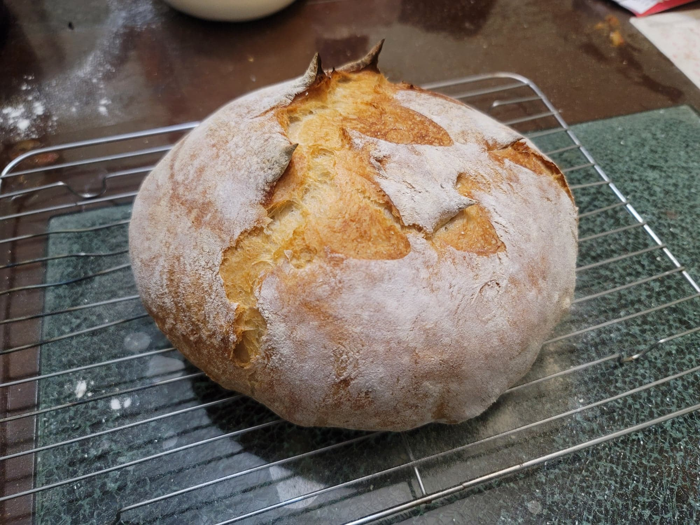

Artisan Bread

Ingredients:
- 450 g Bread flour
- 2 1/4 tsp Instant yeast
- 10 g Salt
- 360 g Water, warmed to 110 degrees Fahrenheit
Instructions:
- In a large bowl, combine all the ingredients until very sticky and no lumps remain. Cover tightly and let rest for either 90-120 minutes at room temperature, or overnight in the fridge.
- Preheat an oven with a dutch oven inside to 450 degrees Fahrenheit. Let the dutch oven preheat in the oven for at least 30 minutes.
- If using chilled dough, let rest at room temperature for about 15 minutes. Heavily flour a work surface and a banneton. Then transfer the dough to the floured work surface. Perform some stretch and folds on the dough and then shape it into a boule shape. Transfer to the banneton seam-side up and cover. Allow the dough to proof for about 15-30 minutes.
- Dust some parchment paper with cornmeal or semolina. Transfer the dough to the parchment paper seam-side down. Score with a lame to create a seam. Remove the dutch oven from the oven and transfer the dough with the parchment paper into dutch oven. Cover and return the dutch oven to the oven. Let bake for about 30 minutes. Then remove the cover and continue to bake for another 15-17 minutes, or until the crust is golden and the internal temperature reads 205 degrees.
- Remove from the oven and transfer to a cooling rack. Let cool completely before serving.